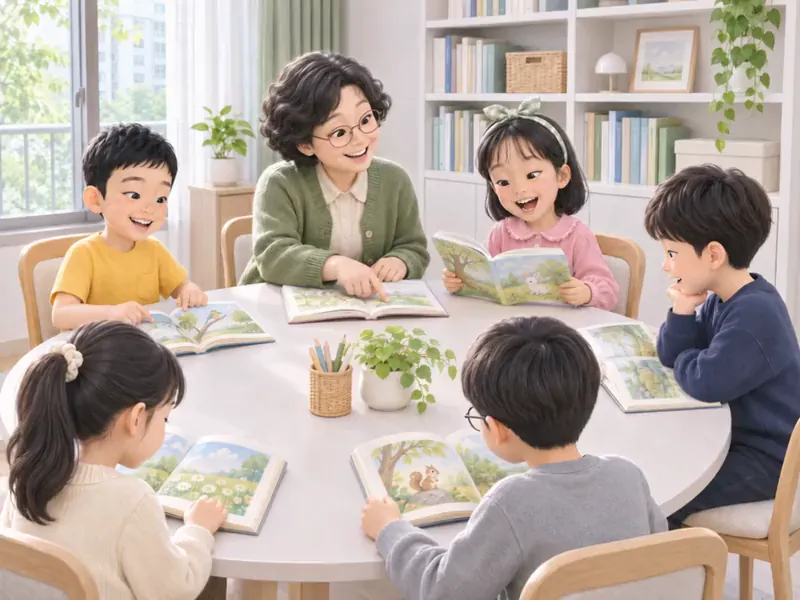
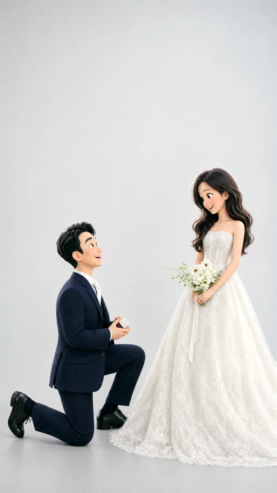
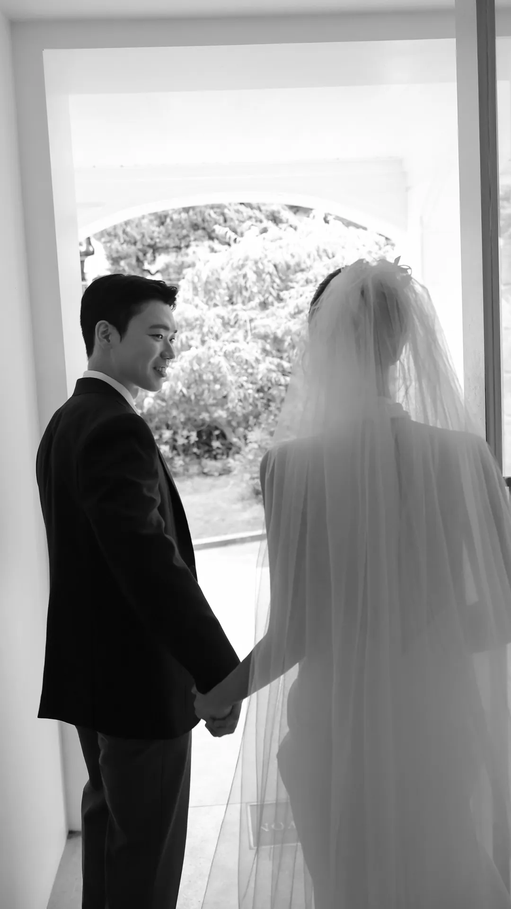

THE WEDDING OF
&


천천히 내려 주세요
-

2000 웃음으로 하루를 채우던 아이와
-

2002 
2002 나란히 줄넘기를 하던 아이는
-

2003 같은 무대에서 연주를 하고
-

2004 방과 후엔 함께 공부를 하며
-
2005 운동회에선 함께 달렸습니다
-

2012 그 뒤 스무 해, 각자의 길을 걷다가
-

2024 서로의 소식이 궁금해진 어느 날
-
2024 규로와 경원은 다시 만났습니다


신랑·신부


오시는 길
우리의 순간
마음 전하실 곳
참석이 어려우신 분들을 위해 계좌번호를 기재하였습니다.
너그러운 마음으로 양해 부탁드립니다.
참석 의사 전달
저희 예식은 모든 하객분들을 위한 지정석으로 준비됩니다.원활한 좌석 준비를 위해 번거로우시겠지만 참석 여부를 꼭 회신해 주시면 감사하겠습니다.